4.1 ATMOSPHERIC PATHWAY MODEL
A
standard straight-line, sector-averaged Gaussian model was selected as
the basis of the atmospheric pathway model. Such a model meets the MEPAS
objective of assessing long-term, average risk from the various inactive
waste sites. This model provides a consistent framework for computing average
exposures, and incorporates the major factors that control the initial
dilution, transport and dispersion, and deposition of various contaminants.
The sector-averaged atmospheric model is particularly applicable in MEPAS
because it allows direct incorporation of long-term site data. The sector-averaged
model computes long-term, average exposures by a weighted summation of
exposures. These exposures are for a matrix of cases covering the range
of combinations of atmospheric stability, wind speed, and wind direction.
This model uses climatological data representing average long-term conditions
used to define the frequency of occurrence of each case in the computation
of an average long-term exposure.
The atmospheric model is not expected to be applicable to all sites. The
sector-averaged Gaussian model applies best to sites located on a uniform,
flat plane, and is used only as an approximation for sites located on other
types of terrain.
Although sites in complex terrain or on a coastline have atmospheric influences
that are quite different than sites located on a flat, uniform plane, the
use of a straight-line Gaussian model can provide reasonable exposure estimates
to the first major terrain feature. As the regional influences become more
important at greater distances, the straight-line Gaussian model becomes
less accurate.
Information on the MEPAS complex terrain module is included in Section
8.0 of this document. More detailed models for plumes in complex-terrain
may be appropriate for use at sites with complex terrain. The MEPAS atmospheric
model allows the use of alternative concentration computation codes, if
they are found to be essential for a specific site.
Applying the sector-averaged model to sites in complex terrain needs careful
attention to ensure that the estimate of risk is reasonable. A wind summary
that reflects the transport to the receptors of interest should be selected.
For example, if risks to the regional population are needed, then a wind
summary typical of the regional transport should be selected. The danger
is that an onsite wind summaries can be dominated by local wind influences
and not be appropriate for a regional evaluation.
The Gaussian diffusion equation used for the concentrations of a contaminant
in a plume downwind of a continuous point-source release is a standard
formulation for atmospheric modeling (see Slade 1968; Bowers et al. 1979):
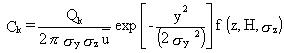
(47)
where
Ck = time-averaged value of concentration for contaminant form k (g/m3)
Qk = amount of material released from a point source of a contaminant form k (g/s)
k = index on elemental contaminant form (k=1, . . . p; p = number of forms representing [p-1] ranges of particle sizes, and a gaseous state)
x,y,z = positions in a Cartesian coordinate system that are oriented such
that the x-axis is in the direction of the mean horizontal wind vector,
the y-axis is cross wind, and the z-axis is vertical height above local
ground level (m)
óy = standard deviation of the distribution of material in a plume in the y-direction (m)
óy = standard deviation of the distribution of material in a plume in the z-direction (m)
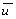 = average value wind speed in the x-direction at the height of the plume centerline (m/s)
H = effective height of release over local ground level (m)
f(z,H,óz) = functional relationship for the vertical variation of plume concentrations (dimensionless).
The function f in Equation 47 has the form of a sum of exponential terms
representing the Gaussian dispersion from the actual plume as well from
virtual plumes. The use of virtual plumes is a means of accounting for
the physical limit onGaussian vertical dispersion encountered at the ground
and at the mixing-height inversion layer. The use of the virtualplumes
are important in avoiding a computational loss of mass by dispersion out
of the real layer in which the plume exits. The material mathematically
"lost" by dispersion of the actual plume through these layers is "recovered"
by adding the contributions of virtual plumes. The virtual plumes are thus
a means of accounting for plume reflections and multiple reflections at
the ground surface and at the mixing height. The form of the function f
is based on a discussion by Ramsdell et al. (1983). The vertical exponential
term is approximated with a sum of exponentials
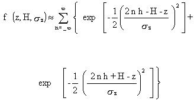
(48)
where h is the height of the mixing height (m).
As a practical matter, the summation can be
truncated after a few terms on either side of zero. In MEPAS, the range
of -4 to +4 is sufficient to assure that the computational mass losses
are very small at all distances.
The crosswind-integrated concentration from
a continuous source is obtained by integrating Equation 46 with respect
to the crosswind distance (y) from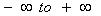
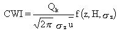
(49)
where CWI = crosswind-integrated concentration (i.e., perpendicular to wind direction) (g/m2).
The frequency of combinations of wind speeds, wind directions, and diffusion
rates can be summarized in terms of a speed, direction, and stability joint
frequency table. The average concentration is computed by multiplying the
integrated concentration formula (Equation 49) by the frequency of a given
set of conditions divided by the width of the sector at the distance of
interest. The sector-averaged concentration for one set of wind speed,
direction, and stability conditions is given by

(50)
where
Cijk(x,z) = sector-averaged atmospheric concentrations for wind speed, i; stability condition, j; and contaminant form, k (g/m3); for the downwind distance x and height z above local ground level
i = index on wind speed (i=1, . . . m; m = number of wind speed classes)
j = index on stability conditions (j=1, . . . n; n = number of stability condition
Rk(x) = deposition and/or decay plume source depletion fraction,
which varies as a function of the position x of the plume for contaminant form k (dimensionless)
ui = wind speed central value for wind speed interval class i (m/s)
ózj = standard deviation of concentration in vertical for stability class j (m)
n = number of wind direction sectors (n = 16) (dimensionless)
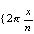= sector width.
The indexed variables are defined in terms of central values for each atmospheric
frequency class (i.e., a set of wind speed, wind direction, and stability
conditions). The removal of the contaminant from the atmospheric plume,
by various depletion processes, is computed using
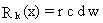
(51)
where fractional losses are defined as
r = radioactive decay term (dimensionless)
c = chemical decay term (dimensionless)
d = dry-deposition term (dimensionless)
w = wet-deposition term (dimensionless).
The
average air concentration near the earth's surface is input to the inhalation
component of the health assessment. The average air concentration, C(x,z)
(g/m3), at ground level (z = 0) for a population located at
a distance and direction from the waste site is computed as the sum of
the concentrations over the i, j, and k indices, given by
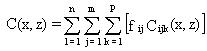
(52)
where
fij = climatological fractional frequency of occurrence of the
wind speed (i) and stability class (j) conditions within the specified
direction (dimensionless).
The table of frequencies of occurrence of the fij values is
referred to as a joint-frequency summary. These data are available as summaries
referred to as "STAR data" from the National Climatic Data Center, Asheville,
North Carolina.
The local surface roughness is characterized by a surface roughness length. Table 4.1 (and Figure 2.1) show examples of the magnitude of this parameter for various surface covers. The
surface roughness lengths in the region surrounding the release are used
to account directly for local influences in both dispersion and dry-deposition
computations.
TABLE 4.1. Typical Surface Roughness Lengths
| Surfaces |
Roughness
Length (cm) |
| Snow, sea, desert |
0.005 - 0.03 |
| Lawn |
0.1 |
| Grass (5 cm) |
1 - 2 |
| Grass (tall) |
4 - 9 |
| Mature root crops |
14 |
| Low forest |
50 |
| High forest |
100 |
| Urban area |
100 |
The central wind speed, ui, in a wind-speed category is not
necessarily applicable to the movement of an atmospheric plume in a region
of interest. The wind speed needs to be adjusted for differences in height
and local surface roughness. The atmospheric component of MEPAS uses relationships
from atmospheric surface layer similarity theory given by Paulson (1970),
Businger et al. (1971), and Hanna et al. (1982) to compute an equivalent
central wind speed at plume height for each wind speed category. To provide
a height adjustment of the wind speed as a continuous function of the local
surface roughness, these relationships are used in preference to less general
power-law approximations (Irwin et al. 1985).
For neutral atmospheric conditions, the following expression is used to
calculate the wind variation with height (Paulson 1970):
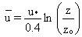
(53)
For unstable atmospheric conditions, the following expression is used to
calculate the wind variation with height (Paulson 1970):
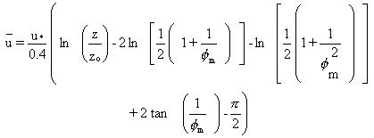
(54)
where
u = average wind speed (m/s)
u* = friction velocity (m/s)
z = height over land/water surface (m)
zo = roughness length of surface (m)
fm= wind-gradient parameter (dimensionless).
In MEPAS, the sum of the last three terms
is approximated using a literature-derived central value of 0.458.
For stable conditions, the following expression
is used to calculate the wind variation with height (Hanna et al. 1982):
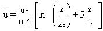
(55)
where L is the Monin-Obukhov length (m), a
scaling length of atmospheric turbulence. Equations 54 and 55 are integrated
forms of relationships derived from field studies by Businger et al. (1971).
To use Equations 52, 53, and 54 for determining the wind variation with
height, the roughness length, friction velocity, and Monin-Obukhov length
must be known or calculated.
Empirical relationships are used in the MEPAS atmospheric model to estimate
the friction velocity (u*) over water surfaces. These friction velocity
relationships were taken from drag coefficient relationships reported in
Large and Pond (1981) by substituting for the friction velocity using CD
= u2* /us:
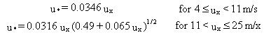
(56)
where ux = wind speed at the 10-m height.
The roughness length is an input parameter for overland surfaces. Charnock's
relationship for the roughness length (zo), as described by
Joffre (1985), is used for overwater surfaces:
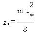
(57)
where
g = acceleration of gravity (m/s2)
m = coefficient (= 0.0144; recommended by Garratt [1977]).
The
Monin-Obukhov length is a function of atmospheric stability and is related
to the Pasquill stability class and roughness length using the relationship
of Golder (1972).
Using the approach
of computing appropriate wind speeds for the underlying surface allows
the wind speeds to vary as a function of distance downwind of the release.
The plume speed is computed at a height of the approximate vertical center
of mass of the plume at each downwind distance. This speed is used to compute
a travel time for each computation interval. The total travel time divided
by the distance traveled defines an average plume speed for use in Equation
50.